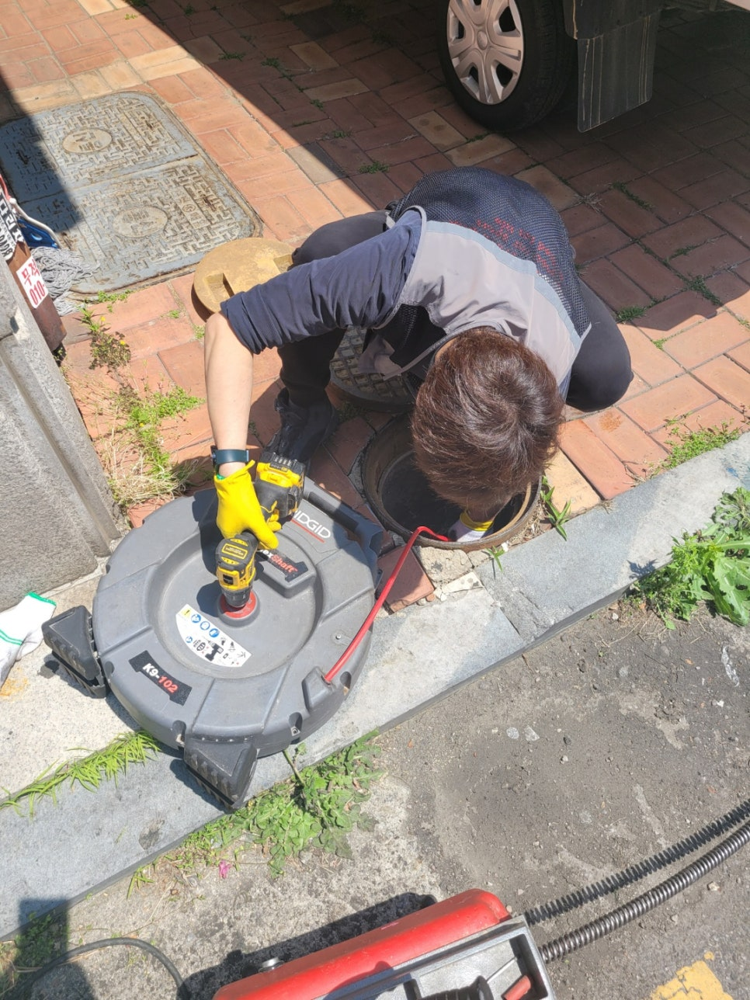
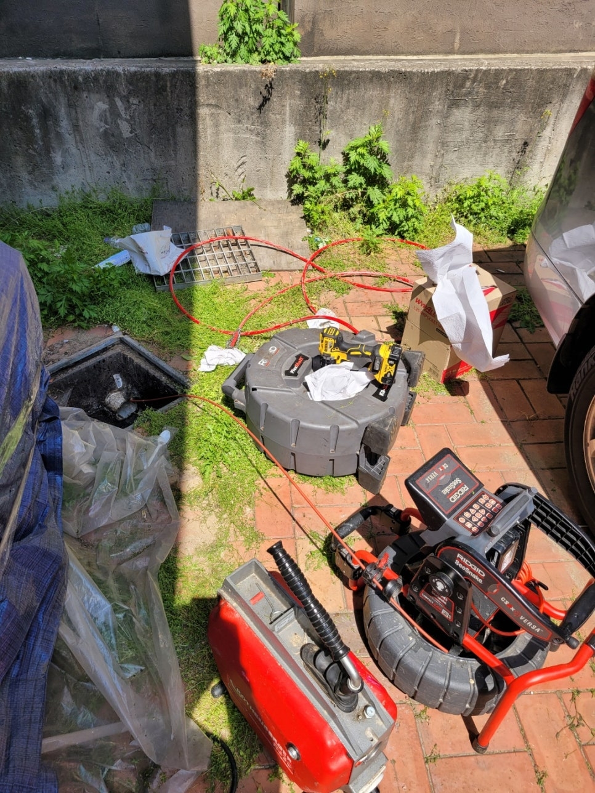
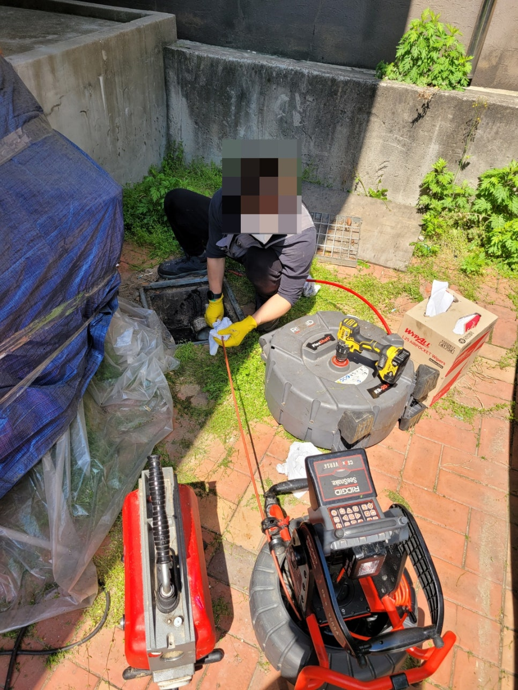
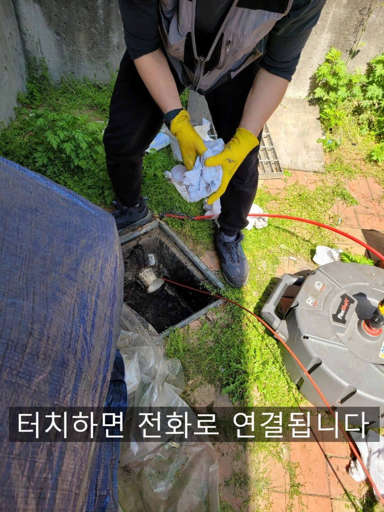
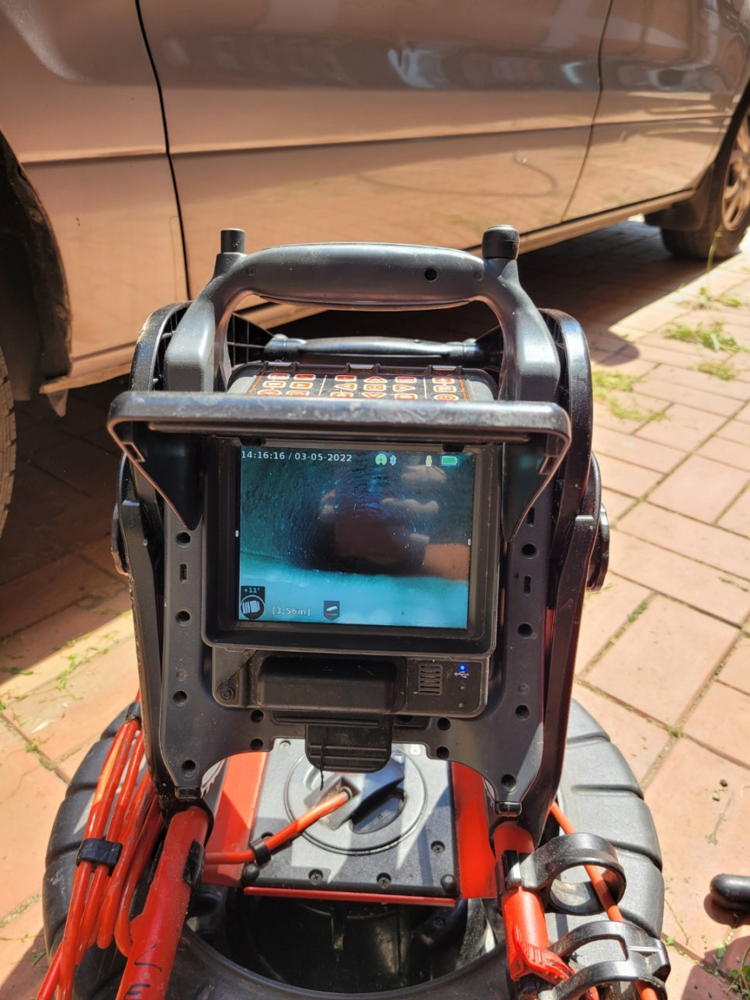
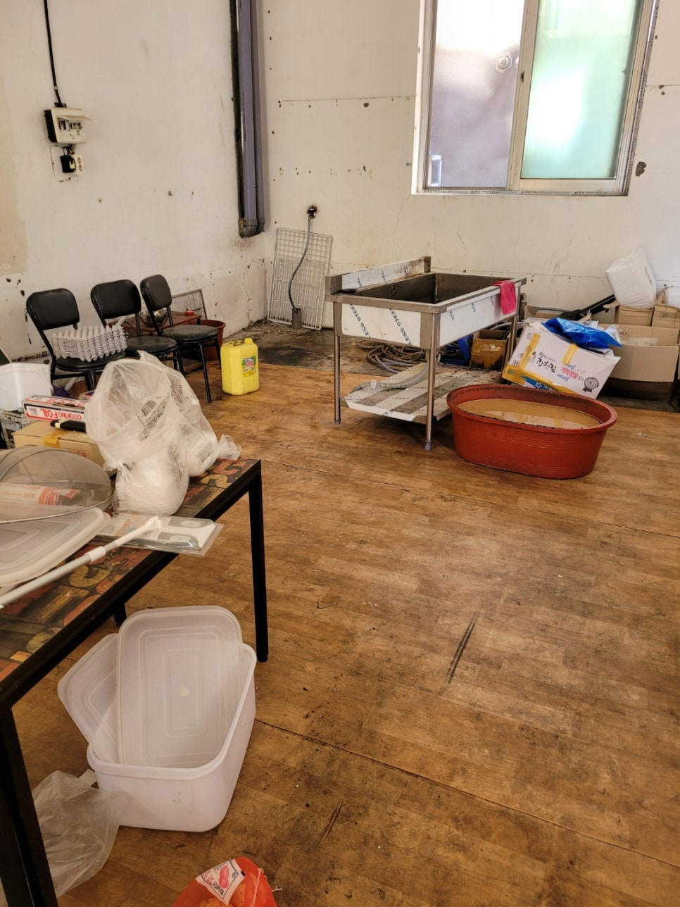
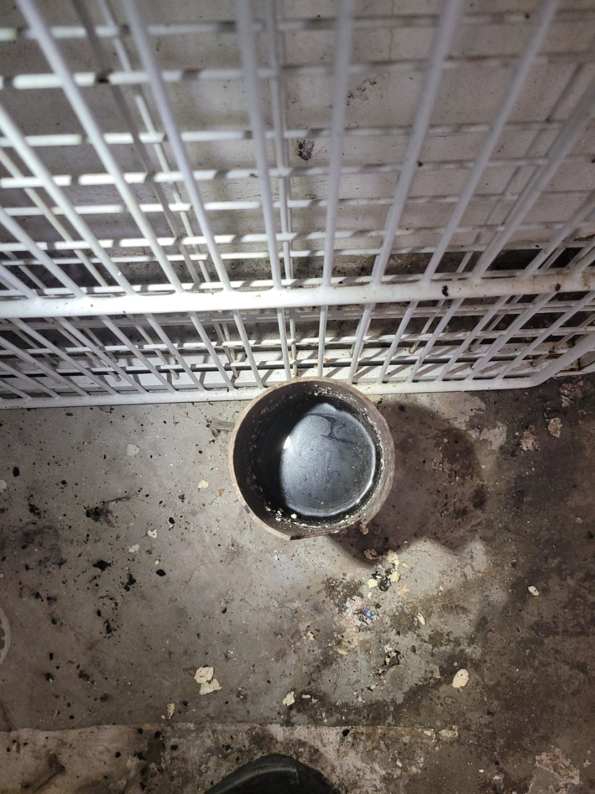

🏠 화성시 병점 하수구 막힘 뚫음 완벽하게 해결했어요
화성 병점 하수구막힘 전문 시공 후기

📋 작업 개요
- 위치: 화성 병점, 병점, 화성
- 서비스 유형: 하수구막힘, 배관막힘, 역류해결, 뚫는업체
- 작업 일시: 2022. 5. 19. 0:54
- 업체명: 하수구수사대 (010-5615-2118)
🔍 문제 상황
화성시 병점 하수구 막힘 뚫음
요즘은 얇은 옷을
입고 다니기 좋을 정도로
날씨가 완전하게 풀린 것을
알 수 있는데요.
이런 때는 몸도 더 가뿐한 상태로
일을 할 수 있어서
결과물도 더 빠르게
나오게 되는 것 같습니다.
이번에 다녀오게 되었던 곳은
화성시 병점 하수구 막힘 뚫음을
진행한 현장입니다.
평소 물을 쓰시면서
점차 좋지 못한 걸 느끼셔서
잘하는 곳을 통해서
해결을 하시려고
알아보시게 되셨다고 했는데요.
여러 곳을 보며 비교를 하신 끝에
선정하게 되어서
연락을 해주셨다고 했습니다.
최신 장비도 보유하고 있고
워낙 성실하게 임하려고
노력하고 있는 곳이다 보니
고객님분들께서 이런 점을
알아보시고는 요즘 들어
문의량이 점차 증가하는

🔎 원인 분석
💡 전문가 진단: 하수구수사대최신장비보유!1년as 보장!주말,공휴일도 ok!010-2340-2118
추세인 것 같은데요.
그런 기대를 실력으로써
충족시켜드리기 위해서
어떤 곳이든 최선을 다하고
있는 것 같습니다.
그래서 이번에도
열심히 해드렸던
화성시 병점 하수구 막힘 뚫음 현장
역시 딱 알맞은 장비를 사용해서
진행을 했었는데요.
이용하신지 꽤 오래되었는지
외관상으로도 조금 좋지 못한
상태인 것으로 보여서
확실하게 처리하기 위해서
신경을 써서 해드렸습니다.
또한 직접 상태를 살펴보면서
하는 것이 가장 좋기 때문에
천천히 파악을 하면서
어떤 곳에서 문제점이 생겨서
지금의 결과를 초래했는지
알아가는 과정을 거쳤습니다.
그리고 확실하게 하기 위해서
배관 부분이 있던 곳에 있는
집기류 등을 치워 놓은 뒤에
꼼꼼히 확인을 하며
해결을 해나가기 시작했습니다.
보통 이렇게

🔧 작업 과정
화성시 병점 하수구 막힘 뚫음이
필요하게 되는 원인으로는
기름이 작용하게 된다고
할 수 있는데요.
가정에서든 사업체에서든
슬러지가 쌓이기 마련이라
조심히 사용하고 있으시지만
시간 상으로 오랫동안
이용을 하셨거나
중간중간 관리를 받지 않게 되면
점차 쌓여 있었던 것들이
배관을 막게 되는 것이죠.
그래서 물이 역류하게 되거나
또는 이도 저도 못하는
상황이 돼버려서
어떻게 하실지 고민하시는데요.
이와 같은 상황에서
대게는 업체를 부르시는 분들이
많으십니다.
하지만 가끔 스스로 해보시려고
여러 방법들을 시도하시지만
배관이라는 것이 워낙 장소마다
다르게 설치가 되어 있다 보니
어렵게 느껴지기도 하고
잘못 건드려서 더 큰 문제로 이어지면
어쩌지 하는 생각에 중간 정도 왔을 때도
문의를 주시는 것 같아요.
저희는 되도록이면
문제가 생기게 되었을 때
바로 연락을 해주시라고 하는 편인데요.
이처럼 전문 도구를 사용해서
하는 편이 가장 빨리할 수 있고
시원한 결과를 보실 수 있기 때문이죠.
그래서 궁극적으로
시간 대비 효율이 훨씬 좋기에
권해드리고 있고
다녀간 곳들은 대부분 오랫동안
안심하며 사용하십니다.
이렇듯 화성시 병점 하수구 막힘 뚫음
작업으로 상쾌한 물줄기를
보실 수 있게 해드렸는데요.
전과 확연하게 다른 모습인 것을


✅ 작업 완료
알 수 있었습니다.
이와 같이 빠른 시간 안에
확실한 결과를 원하시는 분들이
있으시다면
언제든지 편하게 연락해 주세요.
하수구수사대
최신장비보유!
1년as 보장!
주말,공휴일도 ok!
010-2340-2118
경기도 화성시 효행로 1060 10층 1004-A246호




⚠️ 하수구 배관 막힘 예방 및 관리 가이드
- ✅ 머리카락, 비닐, 물티슈 등 물에 분해되지 않는 이물질은 하수구 유입을 절대 금지해 주세요.
- ✅ 하수구 거름망을 씌우고 모여진 이물질은 주기적으로 쓰레기통에 바로 비워주셔야 합니다.
- ✅ 배관 노후가 심할 경우 이물질이 더 쉽게 걸리므로 주기적인 배관 세척(고압세척 등)을 권장합니다.
- ✅ 작업 후 1년 이내 재발 시 하수구수사대에서 무상 A/S 보증 서비스를 제공합니다.
💡 핵심 정리
- 확실한 장비 작업(내시경 점검 및 샤프트 스케일링)으로 원인을 뿌리 뽑습니다.
- 작업 후 1년 이내에 동일한 부위 재발 시 100% 무상 A/S 서비스를 보장합니다.
- 서울 · 경기 · 인천 전 지역에 24시간 언제든 긴급 출동할 수 있도록 항시 대기 중입니다.
❓ 자주 묻는 질문 (FAQ)
🚨 화성 병점 하수구막힘 문제로 고민이신가요?
정확한 원인 진단과 확실한 시공으로 재발 없는 해결을 약속드립니다.
24시간 긴급 출동 | 서울 · 경기 · 인천 전지역 | 1년 내 재발 시 무상 A/S